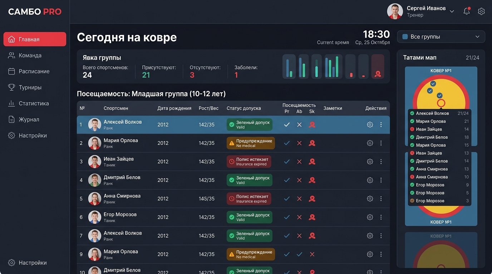
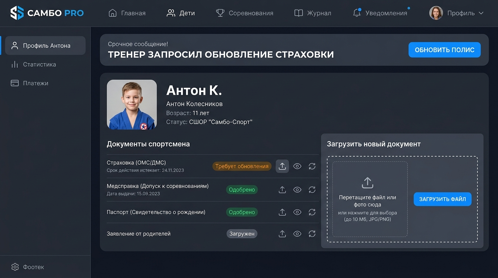
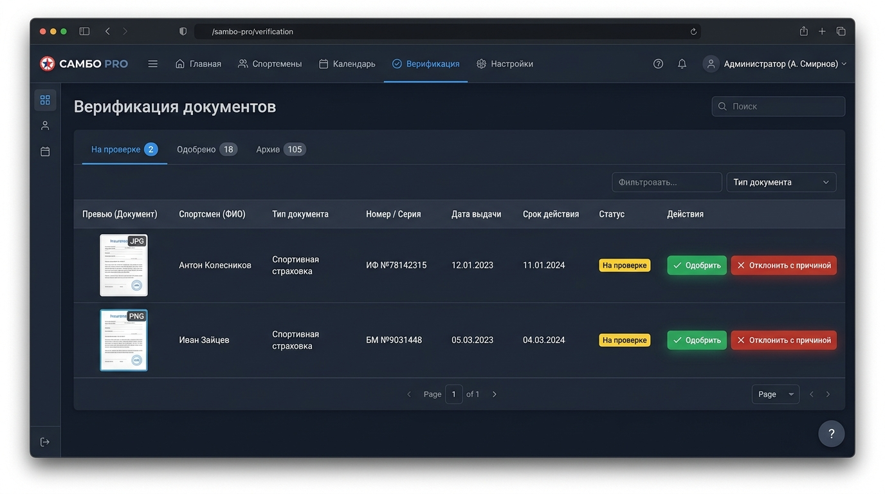
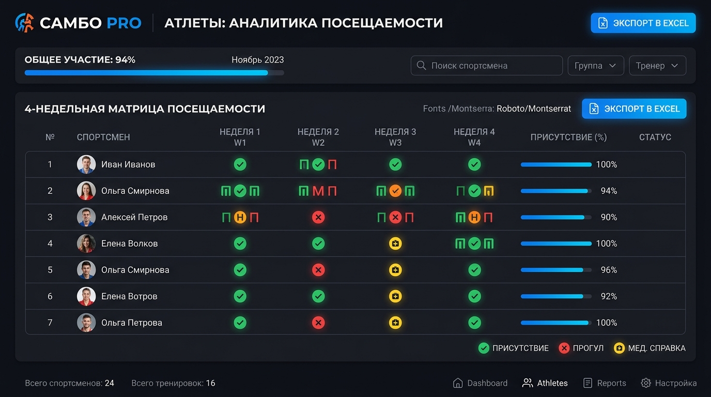

Пошаговое руководство пользователя с иллюстрациями экрана, регламентами взаимодействия и чек-листами для тренеров, родителей, спортсменов и администрации спортивного клуба.
Система разделяет права и интерфейсы между 5 ключевыми участниками процесса. Каждый пользователь видит только то, что необходимо для его задач, без лишнего информационного шума.
Отметка явок на ковре в 1 клик, светофор медицинского допуска, запрос обновления документов родителю, анализ динамики группы.
Контроль посещений ребенка, срочные уведомления от тренера, загрузка полисов и справок с камеры телефона, статус проверки.
Второй контур проверки: экспертиза загруженных справок и полисов, сопоставление дат, допуск или отклонение с комментарием.
Цифровой паспорт борца, динамика разрядов, весовая категория, статистика тренировок и соревнований.
Сводный контроль по всем тренерам и группам, экспорт ведомостей для спорткомитетов и министерства, аудит оплат и страховок перед турнирами.
Главная цель модуля — освободить тренера от бумажного журнала и переписок в мессенджерах. Вся рутина укладывается в 15 секунд перед началом тренировки.

Каждый борец в списке имеет цветной индикатор готовности к нагрузкам:
Все документы в порядке (страховка и допуск диспансера активны). Борец готов к ковру и спаррингам.
Срок действия страховки или справки истекает менее чем через 14 дней. Пора направить запрос родителю.
Полис или справка просрочены, либо отсутствуют. Выход на ковер и соревновательный спарринг строго запрещен!
Больше не нужно звонить родителям или писать в общий чат WhatsApp:
Кабинет родителя адаптирован под мобильные телефоны. Главный приоритет — сделать загрузку документов настолько простой, чтобы родитель справился за 40 секунд стоя в очереди или дома.

Нажмите на синюю кнопку в срочном верхнем баннере или значок стрелки загрузки напротив просроченного документа.
Сфотографируйте документ на камеру телефона (форматы JPG/PNG или PDF) и укажите новую дату окончания срока действия.
Нажмите «Загрузить файл». Запрос тренера автоматически снимется, а документ перейдет в статус «На проверке».
Двухконтурная проверка гарантирует юридическую безопасность клуба. Тренер отвечает за спортивную работу, а верификатор (спортивный врач или секретарь) проверяет подлинность документов.

1. Откройте вкладку «Верификация» и отфильтруйте список по вкладке На проверке.
2. Кликните по превью документа, чтобы открыть скан в полном размере. Проверьте:
3. Если все верно — нажмите Одобрить. Статус спортсмена у тренера сразу станет «Зеленый допуск».
4. Если документ не подходит — нажмите Отклонить и укажите причину (например: «Смазана дата окончания» или «Нет отметки о допуске к самбо»). Родитель получит уведомление с вашим комментарием.
Система автоматически ведет историю каждого занятия и собирает матрицу динамики за последние 4 недели. Это позволяет моментально выявлять риск оттока спортсменов и контролировать дисциплину.

По кнопке «Экспорт в Excel» формируется официальная ведомость за любой календарный месяц с разбивкой по тренировочным дням, часам нагрузки и проценту посещаемости. Готово к подаче в спортшколу или федерацию.
Если спортсмен пропускает 3 тренировки подряд без уважительной причины, система подсвечивает его строку оранжевым маячком. Тренер успевает вовремя связаться с родителем и сохранить воспитанника в секции.
Верификатор или тренер нажимает «Отклонить», указывает причину (например, «Прикреплен полис ОМС вместо спортивного»). Родителю в кабинете снова появится алерт с просьбой повторно прикрепить верный документ, где прямо прописана причина отказа.
В журнале тренера при отметке спортсмена выберите желтый значок с крестиком (статус «Болезнь/Уважительная»). В ведомости и 4-недельной матрице такой пропуск помечается желтым значком и не снижает спортивный рейтинг спортсмена.
Да. Текущая версия хранит все изменения локально в браузере планшета или смартфона. При восстановлении связи данные синхронизируются с сервером без потери отметок.